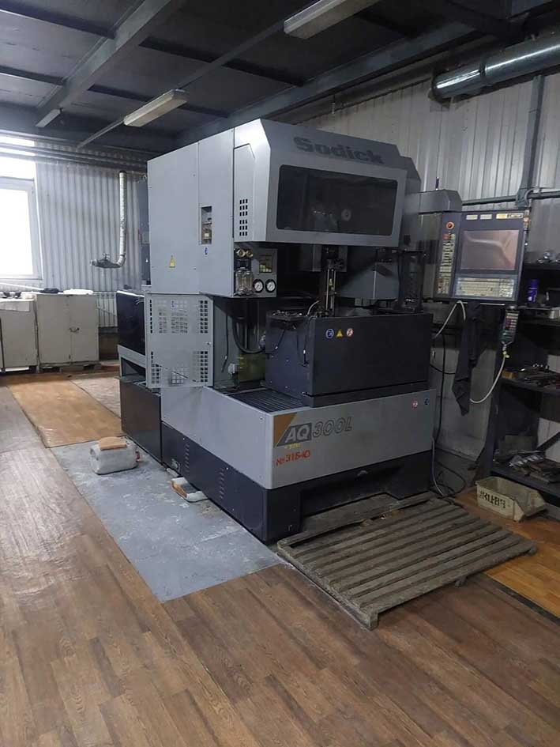

Что мы делаем
Проволочно-вырезная ЭЭО — это метод обработки, при котором тонкая проволока-электрод вырезает контур по программе. Металл не режется механически, а «вымывается» электрическими разрядами. Поэтому твёрдость материала не имеет значения.
- Вырезку сквозных контуров любой сложности
- Изготовление вырубных штампов и пуансонов
- Вырезку пазов, шлицев, зубчатых колёс
- Обработку внутренних и наружных профилей
- Изготовление матриц и вставок для пресс-форм
- Вырезку окон и отверстий в закалённых деталях
- Обработку деталей из титана и жаропрочных сплавов
Оборудование
Станок: Sodick AQ300L (Япония) — проволочно-вырезной электроэрозионный станок с ЧПУ.

| Параметр | Значение |
|---|---|
| Количество осей | 5 |
| Точность позиционирования | ±0,001 мм |
| Достижимая точность обработки | до ±0,002 мм |
| Минимальная ширина паза | 0,25 мм |
| Диаметр проволоки | 0,1–0,3 мм |
| Максимальная толщина заготовки | до 300 мм |
| Шероховатость (чистовой режим) | Ra 0,2–0,4 мкм |
Контроль качества: электронный микроскоп и твердомер. Каждая партия проходит проверку геометрии и твёрдости.
Материалы
| Материал | Почему ЭЭО подходит |
|---|---|
| Закалённая сталь (HRC 45–65) | Механический инструмент изнашивается, ЭЭО — нет |
| Титановые сплавы (Ti-6Al-4V и др.) | Нет наростообразования, нет деформаций |
| Твёрдые сплавы (WC-Co) | Высокая твёрдость и хрупкость — ЭЭО предпочтительнее |
| Жаропрочные никелевые сплавы | Плохо обрабатываются резанием |
| Медь, латунь, бронза | Хорошо проводят ток, стабильная обработка |
| Алюминий | Работает, но требует других режимов (уточняйте) |
| Нержавеющая сталь | Без термических деформаций |
Не обрабатываем: керамику, композиты, пластик, стекло — это диэлектрики, ЭЭО с ними не работает.
Давальческий материал: принимаем. Оформляем акт приёма-передачи, возвращаем остатки.
Типичные задачи (с примерами из практики)

| Задача | Что делаем | Результат |
|---|---|---|
| Вырубной штамп для тонколистовой стали | Вырезаем матрицу и пуансон по чертежу | Точность сопряжения ±5 мкм, без слесарной доводки |
| Паз 0,33 мм в детали из закалённой стали HRC 62 | 5-осевая проволочная резка | Паз без заусенцев и трещин, шероховатость Ra 0,4 |
| Зубчатое колесо модуля 0,5 из титана | Вырезка профиля зуба | Профиль по чертежу, нет наростов и деформаций |
| Вставка в пресс-форму с внутренними радиусами R0,1 | Проволочная вырезка по 5 осям | Внутренние углы, недоступные фрезеровке |
Пример из практики: для приборостроительного предприятия изготовили партию фланцев с пазом 0,33 мм из стали HRC 62. Срок — 6 деталей за смену. Контроль — микроскоп и твердомер. Клиент получил детали без финишной доводки.

Когда выбирать проволочную ЭЭО
ЭЭО оправдана, если:
- Деталь из закалённой стали (HRC 60+) или твёрдого сплава
- Нужны пазы, шлицы, зубья, сложные сквозные контуры
- Внутренние углы и радиусы недоступны фрезеровке
- Деталь тонкостенная или хрупкая (нет механического усилия)
- Нельзя допустить отпуска металла
- Нужна точность в микронах
Когда ЭЭО избыточна:
- Простые сквозные отверстия в мягких материалах (лучше сверление)
- Крупные партии простых деталей (лучше лазерная резка или фрезеровка)
- Материал — диэлектрик
Совет: не сравнивайте стоимость часа. Сравнивайте стоимость готовой детали с учётом брака, простоев и последующих операций.
Как мы работаем
- Заявка — присылаете чертёж (DXF, DWG, STEP, PDF) или образец.
- Расчёт — в течение 2 часов в рабочее время. Указываем стоимость, срок, необходимый материал.
- Согласование — договор, NDA (по запросу), условия оплаты.
- Производство — от 5 дней (прототип) до 2 недель (серия).
- Контроль — микроскоп, твердомер, протокол контроля (по запросу).
- Отгрузка — самовывоз из цеха (Рязань) или доставка транспортной компанией.
Цены
Стоимость проволочной ЭЭО — от 1 600 ₽/час.
Итоговая цена зависит от сложности контура, толщины заготовки, требуемой точности, материала и партии. Пришлите чертёж — рассчитаем за 2 часа.
Частые вопросы (FAQ)
Можно ли вырезать паз меньше 0,25 мм?
Нет, минимальная ширина паза равна диаметру проволоки — 0,25 мм. Это физическое ограничение метода.
Обрабатываете ли вы титан?
Да. Титан и его сплавы — одна из основных групп материалов для ЭЭО. Нет наростообразования и деформаций.
Можно ли резать закалённую сталь?
Да. ЭЭО не зависит от твёрдости. Работаем со сталями HRC 60+ без отпуска.
Принимаете ли давальческий материал?
Да. Оформляем акт приёма-передачи, возвращаем остатки.
Работаете ли по NDA?
Да. Для конфиденциальных заказов подписываем NDA. Не раскрываем структуру производства.
Какой срок изготовления?
Прототип — от 5 дней. Серия — от 2 недель. Точный срок зависит от сложности и загрузки.
Есть ли доставка?
Самовывоз из цеха (Рязань) или доставка транспортной компанией. Обсуждаем индивидуально.
Хотите разобраться в технологии?
Читайте подробный обзор: «Электроэрозионная обработка: от сотых долей миллиметра до зубчатых контуров» →